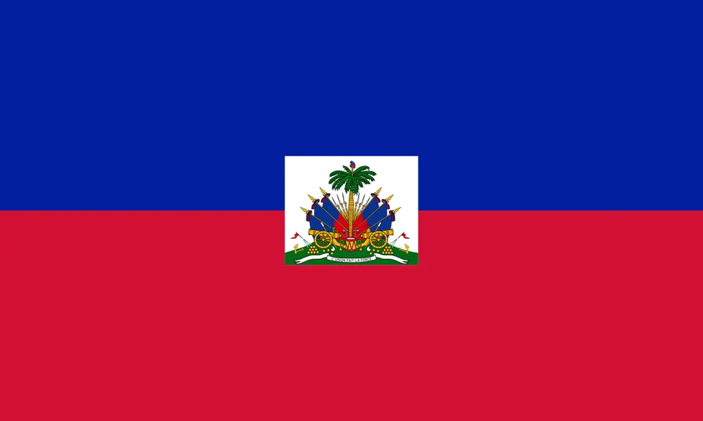

Jean Rodne Cademus
About Me
My name is Jean Rodne Cademus. I was born in Haiti and currently live in Pleasant Grove, Utah. I am currently working as an Operator at Nestle and as a part time trader. My goal is to become a full time trader, I am married to a sweet and beautiful woman. I have a step son. I love spending time with them. I love to travel and love to learn new things. I like sports.

Pleasant Grove, Utah

Haiti is a country in the Caribbean, located in the Caribbean Sea. It is bordered by the Dominican Republic to the north, Jamaica to the west, Cuba to the northwest, and the Dominican Republic to the east. Haiti's capital is Port-au-Prince, located on the east coast. It has a population of around 11 million people. Haiti is the first country black in the world to declare its independence from slave.